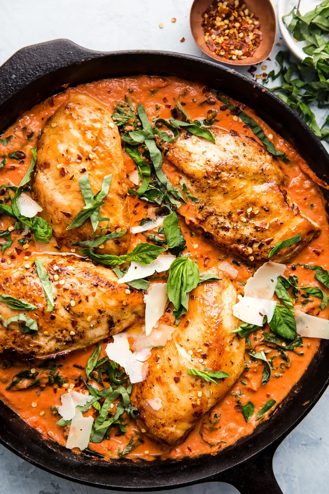

Creamy Tomato Chicken Skillet Dinner

Description
this is delicious ok. i made it for a couple friends and they loved it.
creamy, flavorful, and comfy.
Ingredients
- 2 tbsp olive oil
- 4 medium boneless skinless chicken breasts
- 1 tsp salt
- 1/2 tsp pepper
- 2 tbsp tomato paste
- 3 cloves garlic, minced
- 1 tsp fennel seeds
- 1/2 tsp crushed red pepper flakes (optional)
- 1 (14 oz) can crushed tomatoes
- 1 cup heavy cream
- 1/2 cup parmesan cheese
- 4 cups kale, ribs removed, torn into small pieces, packed
- 1/4 cup basil leaves, thinly sliced
Steps
- Heat olive oil in an ovenproof cast iron skillet over medium-high heat.
- Season chicken breasts with 1/2 tsp salt and pepper.
- Add chicken to skillet and cook until golden, about 5 minutes. Remove chicken from the pan and
set aside.
- In the same skillet, add tomato paste, garlic, fennel seeds, and red pepper flakes and cook
until just fragrant, about 1 minute.
- Add crushed tomatoes and bring to a simmer, allow to cook for 3 minutes.
- Stir in heavy cream, 1/4 cup parmesan cheese, and kale, stirring until kale is just wilted,
about 3 minutes.
- Season with remaining 1/2 teaspoon salt and add chicken back into the skillet. Allow to cook
for 5 more minutes or until the internal temperature of the chicken breasts reaches 165 degrees
F with an instant read thermometer.
- Serve topped with fresh basil and remaining cheese.